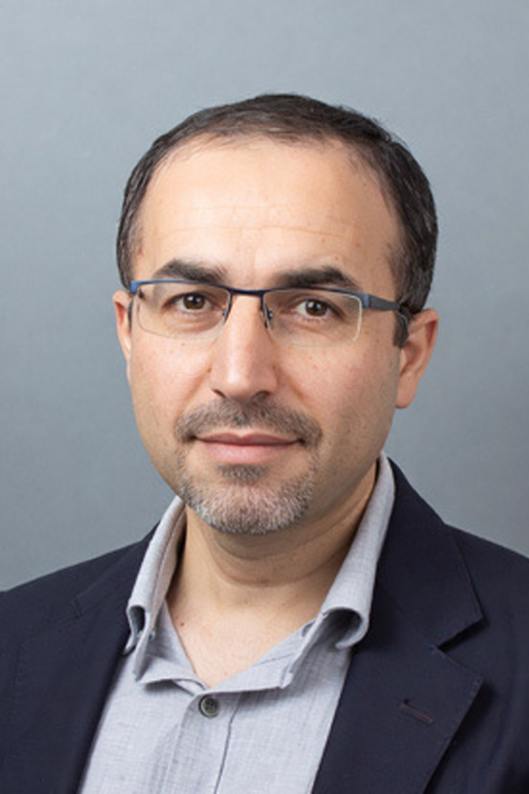
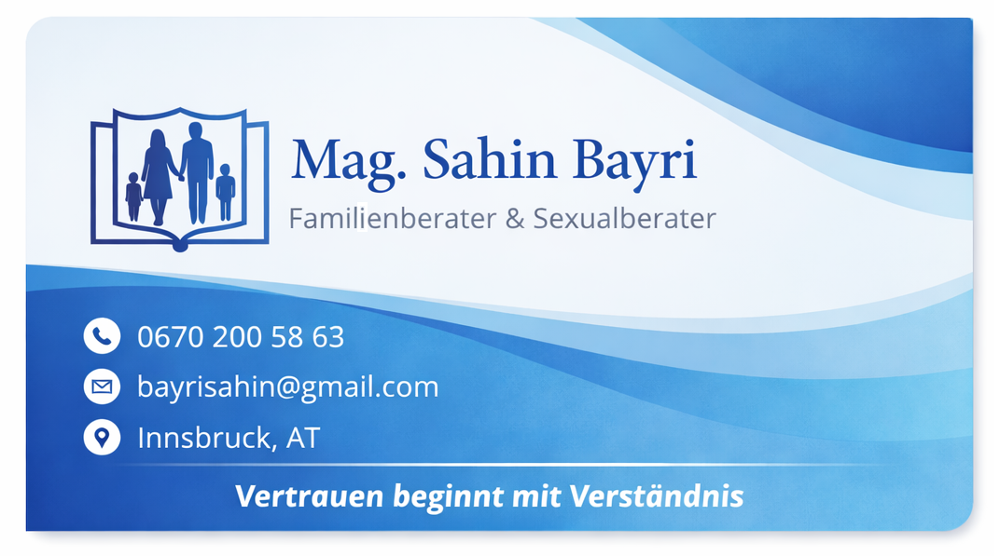

Nach meinem Soziologiestudium habe ich meinen Master in Psychologie abgeschlossen. Anschließend absolvierte ich eine zweijährige, umfassende Ausbildung in Familienberatung und Sexualpädagogik, wodurch ich mich in diesen Bereichen weiter spezialisiert habe.
Seit nunmehr 15 Jahren arbeite ich mit Familien, Paaren und Jugendlichen und unterstütze sie dabei, gesunde, stabile und vertrauensvolle Beziehungen aufzubauen. Derzeit arbeite ich aktiv im Bereich der Kinder- und Jugendhilfe und führe parallel meine Tätigkeit als Familienberater fort. Mein Ziel ist es, Familien und junge Menschen zu stärken und ihnen einen sicheren, unterstützenden und entwicklungsorientierten Rahmen zu bieten.
Im Laufe meiner beruflichen Tätigkeit habe ich besonders intensiv mit Migrationsfamilien gearbeitet. Dadurch konnte ich wertvolle Einblicke in die Auswirkungen kultureller Unterschiede auf familiäre Dynamiken gewinnen und ein tiefes Verständnis für interkulturelle Herausforderungen entwickeln.
Diese Erfahrung verbinde ich mit einer sensiblen, mehrsprachigen Kommunikation, um meinen Klient*innen einen sicheren und respektvollen Beratungsraum zu bieten. Diese Sprachvielfalt ermöglicht es mir, Familien aus unterschiedlichen kulturellen Hintergründen authentisch und direkt zu begleiten.
Mein Beratungsstil ist strukturiert, wissenschaftlich fundiert und gleichzeitig empathisch und ressourcenorientiert. In meiner Arbeit nutze ich vor allem bewährte therapeutische Methoden:
